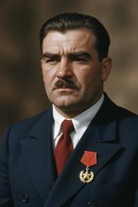
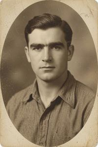
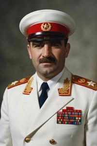
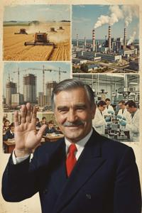
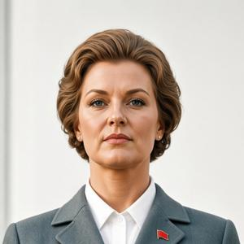

Severyn Gowbka
{kind=link}

Severyn Radov Gowbka (Pannonian Glagolitic: ⰔⰅⰂⰅⰓⰬⰐ ⰓⰀⰄⰑⰂ ⰃⰑⰫⰁⰍⰀ; 14 March 1914 – 10 November 1989) was a Pannonian communist revolutionary and statesman who served as supreme leader of the People's Republic of Upper Pannonia (PRUP) from its founding in 1945 until his death. His forty-four-year rule made him one of the longest-serving dictators of the twentieth century.
Born into a modest intelligentsia family in Vronovica, Gowbka became radicalized in his youth and joined the illegal Communist Party of Upper Pannonia (CPUP) as a teenager. After General Glovacz's dictatorship forced him into exile in 1933, he spent the war years in Moscow under Soviet patronage, returning to Upper Pannonia in 1944 at the head of a Soviet-backed liberation committee. He rapidly consolidated power and established a repressive single-party state modelled on Stalinism. Over the following decades his regime evolved from orthodox Soviet alignment through an idiosyncratic multi-directional neutralism — opposing simultaneously the USSR, Yugoslavia, and NATO — and into deepening isolation and economic collapse. Gowbka died of a heart attack on 10 November 1989, reportedly upon receiving word of the fall of the Berlin Wall. His regime disintegrated within weeks.
His legacy remains deeply contested. Internationally condemned as one of Eastern Europe's most brutal dictators, he is viewed with paradoxical nostalgia by a significant portion of the Pannonian public.
Early life (1914–1933)
Severyn Radov Gowbka was born on 14 March 1914 in Vronovica, then the administrative capital of the semi-autonomous Upper Pannonian Banate within the Kingdom of Hungary. His father, Rado Gowbka, was a schoolteacher at the Vronovica Municipal Gymnasium; his mother, Franciska (née Stanova), came from a family of craftsmen in the city's Fourth District. The family was Zgurian by ethnicity, occupying the lower ranks of the urban intelligentsia: literate and politically conscious, but financially modest.
Gowbka enrolled at the Vronovica Municipal Gymnasium in 1926. He was an indifferent student in most subjects but had an appetite for political pamphlets and clandestine literature circulated among older classmates. In 1929, aged fifteen, he joined the Youth Fighter League (Mlodoborska liga, ML), the underground youth wing of the Communist Party of Upper Pannonia. He quickly distinguished himself by his willingness to engage in direct action. League members regularly clashed with zmocznjak nationalist groups as well as other radical leftists in the streets of Vronovica. Gowbka was arrested twice in 1930 for brawling but released without charge both times due to his age.
When General Drogan Glovacz seized power in 1931 and banned left-wing organizations, Gowbka went underground. Mass executions of communist organizers in 1933 forced him to flee the country. He crossed into Austria and from there made his way to Moscow, where he presented himself to the Comintern as the last surviving senior figure of the CPUP. He was nineteen years old, and almost certainly correct.
Emigration and World War II (1933–1944)
{kind=link}

Gowbka spent the late 1930s in Moscow as a junior Comintern operative, studying Marxist theory and performing minor assignments for Soviet intelligence. In 1939 he married Miljana Skorczinska, a Deglian woman from Bregovo. Before coming to Moscow, she had been a member of a Vronovica anarchist group and the companion of Darislav Bregovi, with whom she had fought in the Spanish Civil War before both were recruited by Soviet intelligence.
When Hungary occupied Upper Pannonia in 1940, Stalin identified Gowbka as a useful instrument for post-war Pannonian politics. In 1942, Gowbka was appointed chairman of the newly constituted UP National Liberation Committee — an organization consisting in practice of Gowbka himself and four NKVD officers assigned to manage him, including Endre Szamenicki, a Pannonian-born operative who served as the Committee's principal liaison with Moscow. A nominal armed wing, the UP People's Liberation Army (Narodna Oslododja Racz, NOR), was assembled from Pannonian émigrés, prisoners of war, and a small number of Soviet instructors; it never exceeded a single reinforced battalion in strength.
After the Red Army's advance in autumn 1944 drove Hungarian forces from Upper Pannonian territory, the NOR participated in mopping-up operations, sustaining modest casualties. This limited involvement was subsequently mythologized beyond all recognition. In the official historiography promoted by Gowbka's regime, it was the NOR — heroically commanded by Gowbka himself — that liberated Upper Pannonia, with the Red Army playing a peripheral supporting role. Textbooks, films, monuments, and the annual Liberation Day parade on 17 November perpetuated this fiction for four decades.
Seizure and consolidation of power (1944–1949)
Gowbka returned to Vronovica in December 1944 as head of a Soviet-backed provisional government. With Red Army troops still garrisoning the country, he moved efficiently to neutralize political rivals. Pro-Hungarian collaborators were tried and executed in large numbers — a process that commanded genuine popular support and lent the new regime an early legitimacy. Simultaneously, he turned the Ministry of People's Security (Naprava ob oxrone naroda, NOON), established in 1945 under Szamenicki, against the nationalist guerrilla movement that had — with bitter irony — actually fought the Hungarian occupiers. These fighters — largely royalist and nationalist in orientation — were systematically hunted down, tried as “fascist bandits,” and executed or imprisoned in the detention camp at Mjedno.
By 1949, all independent political parties had been dissolved, the press nationalized, the church hierarchy brought to heel, and a single-party communist state fully consolidated. A new constitution declared the country the People's Republic of Upper Pannonia. Gowbka assumed the offices of General Secretary of the CPUP, President, Chairman of the Council of Ministers, and Supreme Commander of the NOR simultaneously.
Rule
Political repression
{kind=link}

NOON became the central instrument of Gowbka's rule. At its peak in the 1960s, the organization employed an estimated one operative for every forty citizens, supplemented by a dense network of civilian informants penetrating workplaces, schools, religious institutions, and apartment blocks. The number of political prisoners held in the PRUP at any given time is estimated at between 40,000 and 60,000, though reliable figures remain unavailable. Three assassination attempts against Gowbka — in 1950, 1964, and 1974 — were suppressed with particular ferocity, each generating waves of arrests that swept in hundreds of real and suspected conspirators.
Gowbka was notably suspicious of his own party apparatus and periodically purged figures who had grown too prominent or too independent. His only child, a son named Boris, a.k.a. Borko (born in Moscow in 1939), served briefly as deputy chief of NOON before dying in 1978 under circumstances officially attributed to cardiac arrest. It is widely believed that Borko's death involved a forced suicide or a direct order from Gowbka himself, though the nature of their final falling-out has never been established.
Foreign policy
Gowbka's foreign policy passed through several distinct phases. In the immediate post-war years he was an orthodox Stalinist and a reliable Soviet client, imitating Stalin's image even in his appearance. The 1956 Hungarian Revolution placed him in an awkward position. He publicly supported Soviet intervention, but having already denounced Khrushchev's de-Stalinization policies, he found Soviet–PRUP relations permanently cooled. He gradually moved towards Tito's Yugoslavia.
The break with Yugoslavia came in 1966. Marshal Tito proposed — in ostensible friendship — that Upper Pannonia might wish to join the Yugoslav Federation as a constituent republic. Gowbka regarded this as a thinly veiled annexation offer. He responded with a public rebuke and expelled Yugoslav diplomats. He subsequently aligned the PRUP with the most recalcitrant socialist states: Albania, Romania, and Gaddafi's Libya, while also cultivating relations with the People's Republic of China. His grandiose vision of a “Vronovica–Bukharest–Tirana–Tripoli–Beijing axis” as a nascent “third global power spanning three continents” was received with polite interest in Beijing and frank derision in most other capitals.
After denouncing the Soviet invasion of Czechoslovakia in 1968, Gowbka suspended PRUP membership in the Warsaw Pact and began a sweeping militarization of Pannonian society. Military service became mandatory for both sexes, with terms of three to five years depending on branch and specialty; training emphasized guerrilla tactics and resistance to occupation. Vast quantities of weapons, ammunition, and fuel were stockpiled in underground depots dispersed across the country. After Gowbka's death, these stores proved impossible to account for or destroy, and they fuelled the subsequent civil war for years.
Economic policy
Gowbka constructed a rigidly centralized planned economy, nationalized in full after 1945, admitting no private enterprise even at the retail level. This was a more extreme position than any neighbouring socialist state. Economic results were initially masked by revenues from the country's modest oil deposits, developed intensively from the early 1950s. Nevertheless, the regime's achievements in this period were real and help explain the PRUP nostalgia that persists within contemporary public opinion.
The industrialization of Gowbkaslava — transformed from a minor market town into the country's primary manufacturing center — provided urban employment at wages unavailable in the rural economy. The Gowbka hydroelectric plant on the South Drava, completed in the 1950s, gave Upper Pannonia energy independence from external suppliers for the first time in its modern history. The mass apartment construction program in Vronovica's Zadravska district and in the satellite towns that grew around industrial centers replaced generations of overcrowded tenement housing with standardized concrete blocks that, however uniform, supplied plumbing, central heating, and structural soundness to populations that had lacked all three. Most concretely in popular memory, Article 47 of the 1979 Constitution guaranteed every citizen in continuous employment for five years the right to receive a free Drava car — giving hundreds of thousands of families their first experience of private mobility.
However, by the 1970s the oil deposits were substantially exhausted, and the structural deficiencies of the system became impossible to conceal. In Gowbka's final years, roughly 40% of budget expenditure went to the military, NOON, and construction of the People's Palace (Narodny polac), a construction project begun in 1971 that consumed enormous resources without approaching usable completion. By 1989 the economy had contracted, real wages had fallen sharply, and food shortages were generating open public protest for the first time in four decades.
Cult of personality
{kind=link}

Gowbka promoted an aggressive cult of personality that intensified rather than diminished over the decades of his rule. He awarded himself the title of Generalissimo in 1953, soon after Stalin's death, and subsequently accumulated a roster of honorifics such as “The Most Beloved and Respected Leader,” “Avant-Garde Commander of the Global Communist Movement,” and “Embodiment of Strategic Genius.” Marxism-Gowbkaism was proclaimed official ideology. More than forty streets, six towns, three mountain peaks, a university, the main power plant, and the main international airport were named in his honour. A somewhat smaller list bore the name of his wife Miljana, since 1960 a perennial Chairwoman of the Legislative Assembly — a purely decorative but still honorable position.
Gowbka presented himself as a prolific intellectual author — in practice, a stable of ghost-writers produced works attributed to him that were made mandatory reading at every level of the educational system. The most widely assigned include The Pannonian Path (1959), a theoretical treatise on Pannonian national communism; Against the Two Imperialist Blocs (1967), an exposition of his anti-NATO, anti-Soviet foreign policy doctrine; and Roots of Pannonian Socialism (1973), a tendentious history rewritten around the centrality of his own role.
His most enduring physical legacy is the Sockostur (Socialist City), a vast planned urban district built on the southern edge of Vronovica. Construction began in 1965 and continued until Gowbka's death, comprising administrative palaces, ceremonial boulevards, housing blocks, and the monumental Victory Square with an 18-metre equestrian statue of Gowbka on an 18-metre granite plinth. Gowbka's retention of power was periodically ratified through presidential elections conducted as single-candidate referendums. He won eight such contests; official results invariably reported approximately 99% approval with 99% voter turnout.
Personal life
{kind=link}

After a youth of poverty and privation, Gowbka developed a taste for luxury almost as soon as he took power: lavish banquets, opulent residences, expensive tailoring. He paid for all of it out of the state budget, drawing little distinction between his own pocket and the treasury; his indulgences were simply filed under “representation expenses.” He was equally fond of women, outdoing even his predecessor King Drogan, no ascetic himself. A dedicated unit within the presidential apparatus, officially the Sixth Directorate — wits preferred its German nickname, Amt Sechs — was tasked with supplying Gowbka with a rotating cast of mistresses drawn from Youth Fighter League activists, female NOR servicewomen, and the like. Interviewed after the fall of the communist regime, the Directorate's former chief was asked whether coercion had ever been used; he simply laughed, saying there had never been any shortage of volunteers. Persistent rumor held that Gowbka worked his way through the wife of nearly every senior party official at one time or another — a practice with its own political logic, since a husband's willingness to tolerate the affair served as proof of his absolute loyalty.
Miljana Gowbka was well aware of her husband's infidelities and treated them with equanimity; for his part, despite his philandering, he loved her in his own fashion, regarding her as a comrade, a fellow believer, and a partner-in-arms. Gowbka not only heaped honors on Miljana but genuinely valued her counsel, and her voice was often decisive in matters of culture, education, and family and demographic policy — though the popular rumor that “Sevko danced to Miljcza's tune” (Sevko and Miljcza being the diminutives of Severyn and Miljana) was probably an exaggeration. Whatever happened to Boris Gowbka in 1978, the tragedy left the couple's relationship, and their partnership, undamaged.
Death and legacy
On the evening of 10 November 1989, Gowbka suffered a fatal myocardial infarction at his private estate, the Zeleny Dvor (Green Court), outside Vronovica, reportedly within hours of receiving reports that the Berlin Wall had been opened. He was seventy-five years old. The regime suppressed news of his death for three days while NOON officers arranged a secret burial at an undisclosed location; the site of his grave has never been officially confirmed. His widow Miljana and surviving relatives left the country within forty-eight hours of his death, reportedly taking with them a substantial portion of the state treasury; they settled in Libya and never returned.
The Communist Party's hold on power collapsed within six weeks. Under the pressure of mass protests, the PRUP leadership resigned from its government posts, ceding power to a “provisional technical government.” The parliament, which until then had merely rubber-stamped party decisions, proclaimed a transition to multi-party politics and a sweeping program of democratic reform. The Communist Party itself hastily renamed itself Socialist and announced its intention to reassess Gowbka's legacy and correct his mistakes — though this did not save it from splitting apart. The political fragmentation, economic collapse, and eventual armed conflict that followed are directly traceable to the institutional hollowness, accumulated social tensions, and massive unsecured weapons stockpiles that his rule had created.
Gowbka remains one of the most contested figures in Pannonian history. International historians and human rights organizations characterize his rule as a totalitarian dictatorship responsible for tens of thousands of political killings and the suppression of civic life for an entire generation. Within the former republic, however, polling consistently finds significant nostalgia for his era among citizens who associate it with peace and stability — in sharp contrast to the subsequent civil war, economic collapse, and dissolution of the country. According to post-2020 polls, 60–70% of respondents consider Gowbka's reign the golden age of Pannonian history.
Categories: People, Politicians, Socialist era